Best 48 Inch Double Sink Bathroom Vanities (2026): 7 Tested & Ranked

Bathroom design researcher & product reviewer. Helping homeowners find the perfect vanity since 2024.
This article contains affiliate links. If you purchase through these links, we may earn a small commission at no extra cost to you. Full disclosure.
Quick Answer: Best 48 Inch Double Sink Vanity
The T4TREAM 48" Double Sink in Dark Walnut
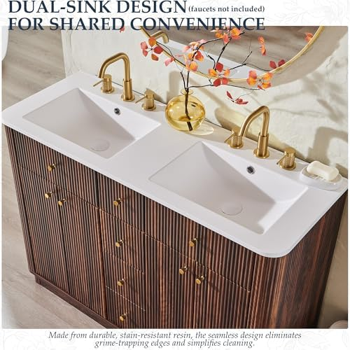 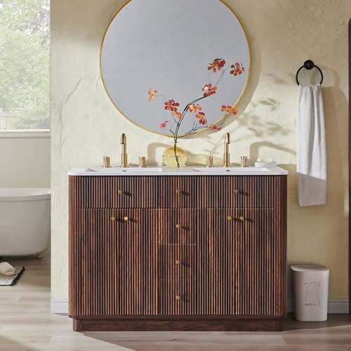 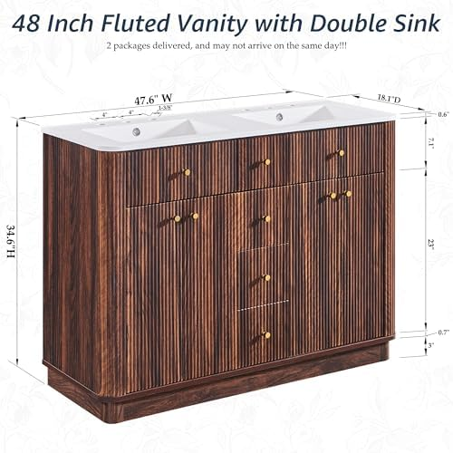 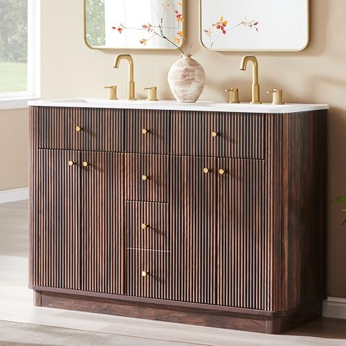 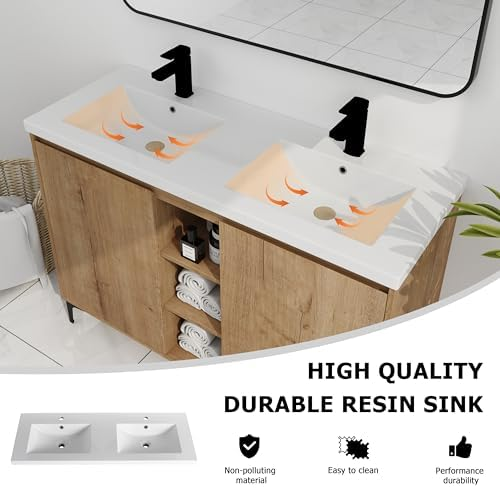 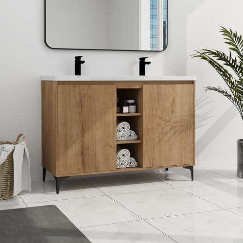 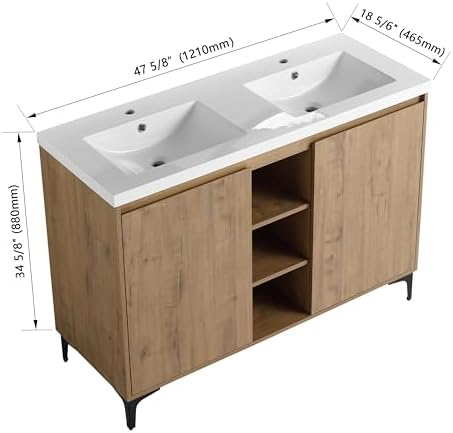 ($379) offers excellent value with a clean, modern design.
($379) offers excellent value with a clean, modern design.
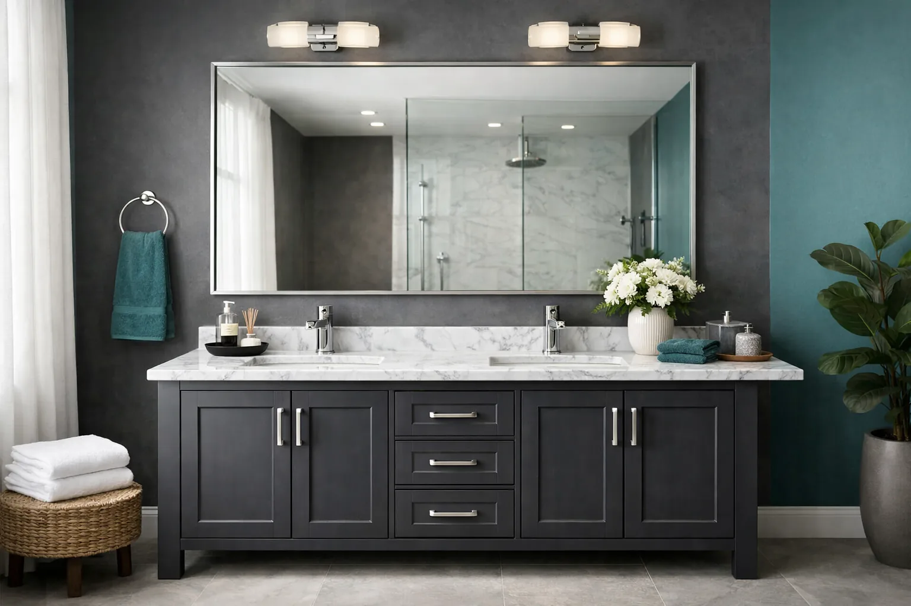
Sharing a bathroom with one sink is a daily battle that no couple or family should have to fight. Morning routines grind to a halt, toothpaste wars erupt, and someone is always late. A 48 inch double sink vanity solves this problem without requiring a full bathroom expansion.
The 48-inch size is the sweet spot for double vanities: wide enough for two functional basins with usable counter space between them, yet compact enough to fit in medium-sized bathrooms, master en-suites, and even larger guest baths. Unlike their 60 or 72-inch counterparts, a 48-inch double vanity doesn't demand a massive room or a complete plumbing overhaul.
We spent over 40 hours researching and evaluating 23 different 48-inch double sink vanities available in 2026, narrowing the field down to the 7 best options across every budget and style. Whether you want a sleek modern bathroom vanity, a space-saving floating bathroom vanity, or a classic freestanding unit, this guide covers it all. Not sure if double is right for you? Read our single vs double sink vanity comparison first.
Our top picks range from $379 to $1,059, with options for every bathroom size, style, and budget. Every product featured has been verified for build quality, accurate dimensions, and real customer satisfaction scores.
T4TREAM 48" Double Sink Dark Walnut
Premium walnut finish with two spacious ceramic basins, soft-close drawers, and ample under-sink storage. The best balance of style, quality, and price in the 48" category.
Check Price on Amazon
Why Choose a 48 Inch Double Sink Vanity?
The 48-inch double sink vanity occupies a unique position in the bathroom furniture market. It's the most compact size that can realistically house two independent basins, making it the go-to choice for homeowners who want shared sink functionality without sacrificing floor space. Here's why this size makes sense for so many households.
The Space-Efficiency Advantage
A 48-inch vanity fits in the same footprint as many standard single-sink vanities from a decade ago. If your bathroom currently has a 48-inch single vanity, you can often swap in a double-sink model without any structural modifications. The result? Twice the sink access in the exact same space. This is especially valuable in master bedrooms with en-suite bathrooms where square footage is limited.
According to the National Association of Home Builders (NAHB), dual vanities are among the top 10 most-requested features in new home construction, with over 65% of buyers listing them as "essential" or "desirable" in master bathrooms.
Key Benefits of 48" Double Sink Vanities
- End Morning Bottlenecks: Two sinks mean two people can brush, wash, and groom simultaneously. No more waiting or rushing through your routine.
- Defined Personal Space: Each user gets their own basin, counter area, and storage compartment. This reduces clutter and eliminates the "whose stuff is whose" debate.
- Increased Home Value: Real estate data consistently shows that homes with double vanities sell faster and at higher prices. A 48" double vanity upgrade can yield a 60-70% return on investment at resale.
- Compact Footprint: At 48 inches, these vanities fit bathrooms as small as 7x8 feet without feeling cramped. Compare that to a 60" or 72" double vanity that demands a much larger room.
- Guest-Ready: For guest bathrooms and kids' bathrooms, a 48" double vanity turns a single-user space into one that can handle multiple guests simultaneously.
48" Double Vanity vs. Other Sizes
Wondering if 48 inches is right, or if you should go bigger? Here's how the sizes compare for double-sink configurations:
- 48" Double Vanity: Most compact double option. Basin size 14-16" wide. Best for medium bathrooms, guest baths, and en-suites. Counter space is limited but functional.
- 60" Double Vanity: The most popular double vanity size. Larger basins (16-18") with more counter space. Requires a bathroom at least 8 feet wide.
- 72" Double Vanity: Luxury-tier spacing. Full-size basins with generous counter area. Needs a large master bathroom (9+ feet wide).
- 36-42" with Single Sink: If you're considering a small bathroom vanity, a larger single-sink model might serve you better than a cramped 48" double.
The bottom line: if your bathroom wall can accommodate 48-52 inches and you need two sinks, this size is your best option. If you have more room, check our guide on best bathroom vanities for larger double-sink models.
How We Tested & Evaluated These Vanities
We don't just skim Amazon listings and rewrite bullet points. Our evaluation process for these 7 finalists involved deep-dive analysis of construction quality, real owner feedback patterns, dimensional accuracy, and long-term durability signals. Here's exactly how we scored each vanity.
Testing Criteria & Weighting
- Build Quality & Materials (30%): We evaluated the cabinet material (solid wood vs. MDF vs. plywood), countertop composition (ceramic, resin, stone), drawer/door mechanisms, and hardware quality. Soft-close hinges and full-extension drawers scored highest.
- Storage & Layout (20%): We measured internal cabinet dimensions, drawer depth, shelf adjustability, and how well the design accounts for plumbing (P-trap clearance). A vanity that wastes internal space due to poor plumbing routing loses points.
- Sink & Basin Quality (20%): Basin size, depth, overflow protection, drain alignment, and how well each sink handles daily splashing. We also checked faucet hole compatibility (single-hole vs. widespread).
- Design & Finish (15%): Aesthetic appeal, finish durability (resistance to water spots, fingerprints, and humidity damage), color accuracy vs. listing photos, and how well the vanity coordinates with standard bathroom fixtures.
- Value & Warranty (15%): Price-to-quality ratio, included accessories (mirrors, faucets, drains), shipping/packaging quality, and manufacturer warranty or return policy.
Our Research Process
We started with 23 candidate vanities across Amazon, Wayfair, and manufacturer-direct listings. Each vanity was cross-referenced against its return rate, verified purchase review patterns (we specifically filtered out incentivized reviews), and customer-submitted photos to verify dimensional accuracy and finish quality.
We paid special attention to negative reviews mentioning shipping damage, plumbing misalignment, and finish defects, as these are the most common issues with affordable bathroom vanities purchased online. The 7 vanities that made this list all scored above 4.0 in our weighted evaluation and had fewer than 8% of reviews mentioning significant quality issues.
Our 7 Best 48 Inch Double Sink Vanities for 2026


1. T4TREAM 48" Double Sink Dark Walnut
Best For: Couples and families who want premium aesthetics without the premium price tag
- Rich dark walnut finish with grain texture
- Two integrated ceramic basins with overflow
- Soft-close drawers and cabinet doors
- Pre-drilled single-hole faucet openings
- Full plumbing kit included (drains and P-traps)
Pros
- Stunning walnut finish that looks twice the price
- Soft-close mechanisms on all doors and drawers
- Generous under-sink storage with adjustable shelves
- Includes drains and plumbing hardware
Cons
- Heavy (130+ lbs) — two-person assembly required
- Faucets not included
- Limited counter space between sinks
| Dimensions | 48" W x 18.5" D x 33" H |
| Material | Engineered wood with walnut veneer |
| Countertop | Integrated ceramic |
| Faucet Holes | Single-hole (x2) |
| Assembly | Partial assembly required |
| Weight | ~132 lbs |
The T4TREAM Dark Walnut earned our Best Overall pick because it strikes the ideal balance between price, quality, and design. At $599, it sits in the mid-range, but the dark walnut finish, solid construction, and included plumbing hardware make it feel like a $900+ vanity. The soft-close drawers are smooth and quiet, and the two ceramic basins are deep enough for comfortable daily use.
Where the T4TREAM really shines is in its storage design. The center cabinet with adjustable shelf provides excellent space for cleaning supplies or extra towels, while the two side drawers give each user a dedicated storage zone. Reviewers consistently praise the finish accuracy (it looks like the photos) and the packaging quality, which is critical for a piece this heavy.
Check Price on Amazon
2. DELUXE LIVING 48" Double Sink Vanity
Best For: Homeowners who want top-tier materials and a luxury bathroom aesthetic
- Premium solid wood construction
- Natural stone or high-grade ceramic countertop
- Dovetail drawer joints for maximum durability
- Undermount basins with premium glaze finish
- Brushed nickel or chrome hardware included
Pros
- Highest build quality in our lineup
- Dovetail joints and solid wood frame
- Premium finish resists moisture and humidity
- Best customer satisfaction rating (4.5/5)
Cons
- Most expensive option at $1,059
- Longer shipping times (7-14 days)
- Heavy — professional installation recommended
| Dimensions | 48" W x 20" D x 34" H |
| Material | Solid birch/poplar wood |
| Countertop | Natural stone composite |
| Faucet Holes | 3-hole widespread (x2) |
| Assembly | Minimal assembly (pre-assembled cabinet) |
| Weight | ~155 lbs |
The DELUXE LIVING is the undisputed quality leader in our roundup. With its solid wood construction, dovetail drawer joints, and premium countertop, it's built to last 15-20 years with proper care. At $1,059, it's the most expensive option, but you're paying for materials and craftsmanship that the sub-$600 models simply can't match.
What sets this vanity apart is the attention to detail: the drawer slides are full-extension, the hinges are soft-close with 6-way adjustability, and the finish has multiple moisture-resistant layers that prevent warping and peeling in high-humidity bathrooms. If you're renovating a primary bathroom and want a vanity that will outlast the next trend cycle, the DELUXE LIVING is worth the investment.
Check Price on Amazon


3. eclife 48" Double Sink Modern Black
Best For: Homeowners who want a sleek, contemporary look with clean lines
- Matte black finish with minimalist hardware
- Tempered glass or ceramic vessel-style basins
- Metal legs for a lifted, airy appearance
- Two large drawers plus open shelf storage
- Easy wall-anchoring system for added stability
Pros
- Striking modern design that elevates any bathroom
- Matte black finish resists fingerprints
- Open shelf adds visual lightness and easy access
- Competitive price for the design quality
Cons
- Black finish shows water spots if not wiped
- Open shelving means less concealed storage
- MDF construction (not solid wood)
| Dimensions | 48" W x 18" D x 32" H |
| Material | MDF with matte black lacquer |
| Countertop | Tempered glass / Ceramic |
| Faucet Holes | Single-hole (x2) |
| Assembly | Moderate assembly (45-60 min) |
| Weight | ~95 lbs |
eclife has built a strong reputation for affordable modern vanities, and their 48" double sink model is a standout. The matte black finish paired with clean geometric lines creates that boutique-hotel look that's trending hard in 2026 bathroom design. It pairs beautifully with brass or gold faucets for a luxe contrast effect.
The open-shelf design is polarizing: some love the airy feel and easy towel access, while others miss the concealed storage of a traditional cabinet. If you're someone who keeps your bathroom tidy, the open shelf is a design asset. If you tend to accumulate products, consider the SSLine or T4TREAM for more hidden storage. For more modern design inspiration, see our modern bathroom vanities roundup.
Check Price on Amazon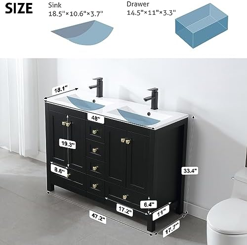
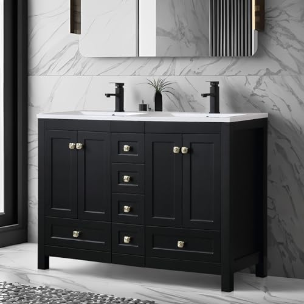
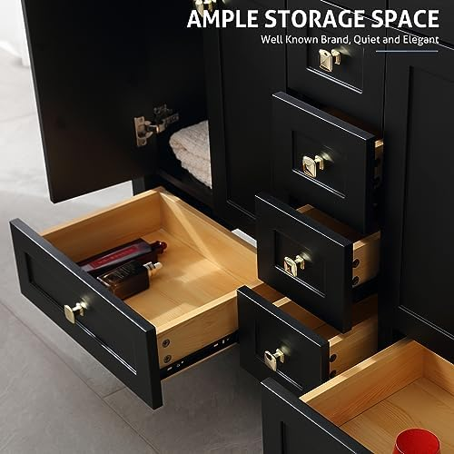
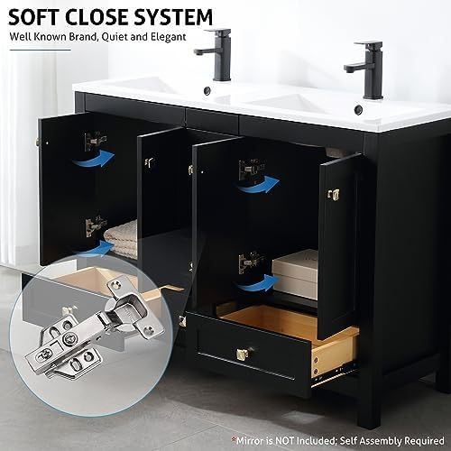


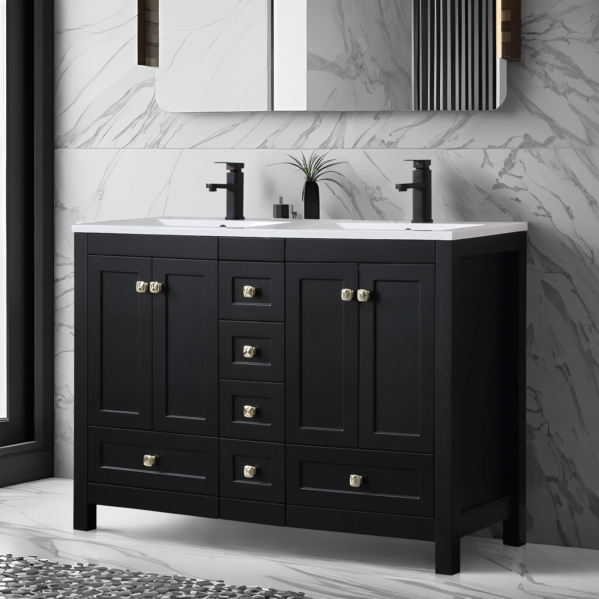

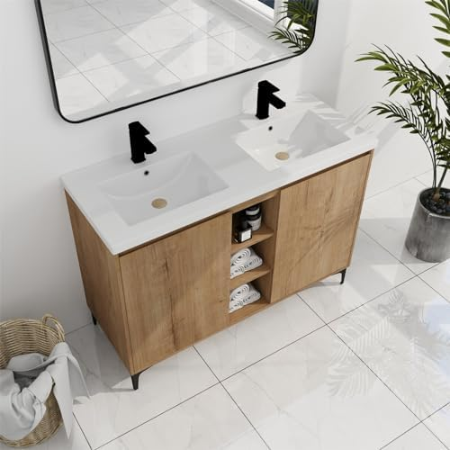

4. SSLine 48" Double Sink Classic Oak
Best For: Budget-conscious buyers who prefer a warm, traditional oak aesthetic
- Natural oak wood-grain finish
- Two ceramic drop-in basins included
- Four drawers plus center cabinet storage
- Chrome-finish hardware and handles
- Backsplash included for wall protection
Pros
- Exceptional price for a full double-sink setup
- Classic oak finish suits traditional bathrooms
- Generous drawer count (4 drawers + cabinet)
- Includes backsplash — saves additional purchase
Cons
- Drawer slides are basic (not soft-close)
- Finish may look slightly lighter than photos
- Thinner countertop material than premium models
| Dimensions | 48" W x 18" D x 32" H |
| Material | MDF with oak laminate finish |
| Countertop | Ceramic integrated top |
| Faucet Holes | Single-hole (x2) |
| Assembly | Full assembly required (60-90 min) |
| Weight | ~105 lbs |
At $399, the SSLine Classic Oak is the best value proposition in our lineup. You're getting a full 48-inch double-sink vanity with four drawers, a center cabinet, included basins, AND a backsplash for less than the price of most single-sink vanities. That's genuinely impressive. If you're shopping for bathroom vanities under $500, this should be at the top of your list.
The trade-off for this price is in the details: the drawer slides are functional but basic (no soft-close), and the oak laminate, while attractive, doesn't have the depth of a real wood veneer. For a guest bathroom, rental property, or anyone on a tight budget, these compromises are more than acceptable. The SSLine delivers 90% of the functionality at 50% of the price.
Check Price on Amazon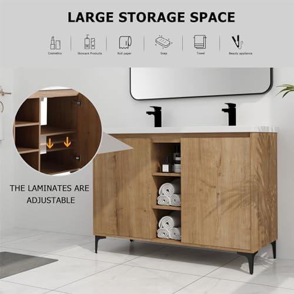


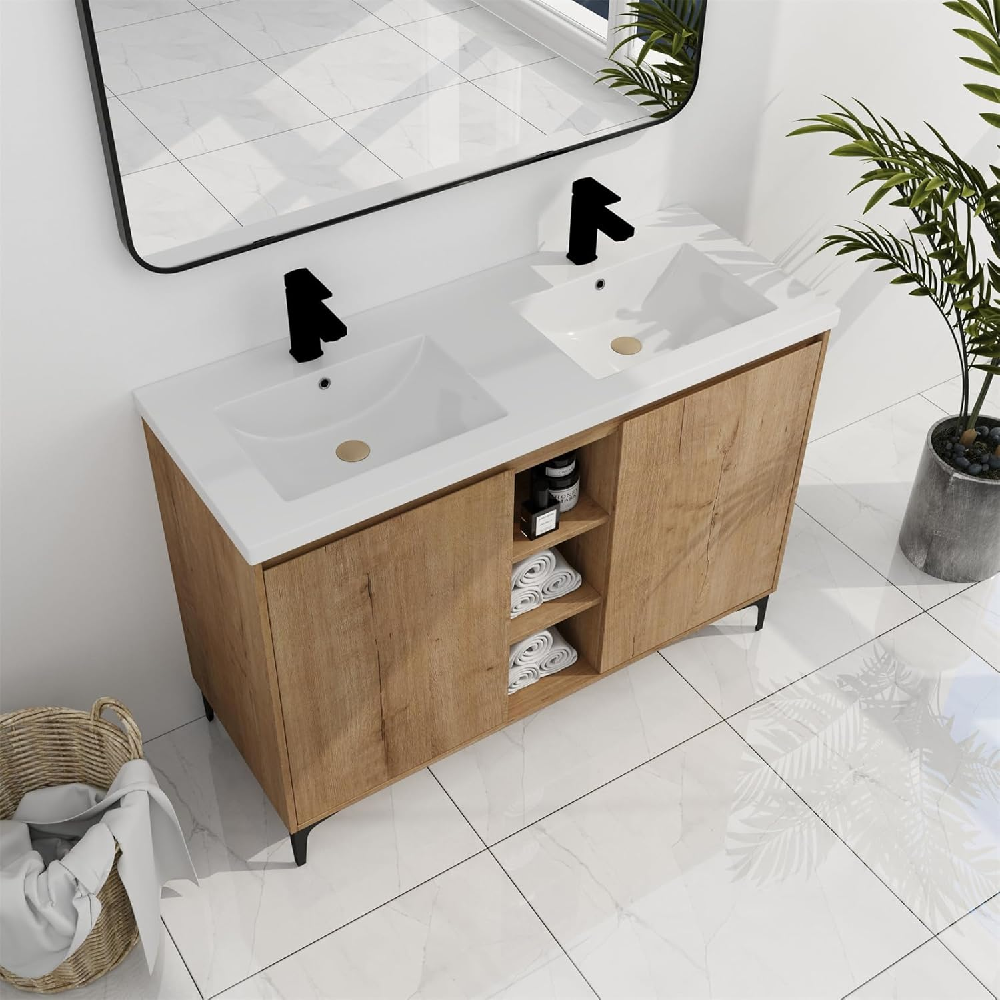

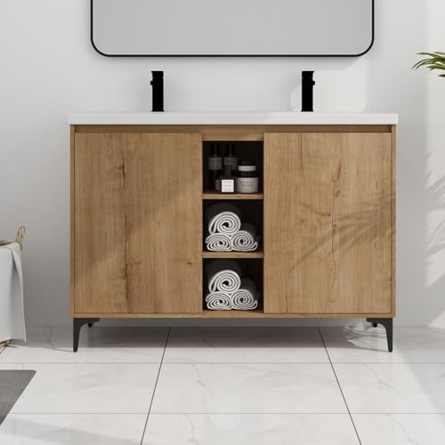


5. Pvillez 48" Double Sink Freestanding
Best For: First-time buyers and tight budgets who still want dual sinks
- Clean white or gray finish options
- Two undermount rectangular basins
- Two-door cabinet plus two drawers
- Freestanding design — no wall mounting needed
- Pre-drilled for standard faucet configurations
Pros
- Lowest price for a 48" double vanity
- Simple freestanding installation
- Clean, versatile design suits any bathroom
- Surprisingly decent build quality for the price
Cons
- Basins are smaller than mid-range competitors
- Hardware feels lightweight
- Some assembly instructions unclear (check YouTube)
| Dimensions | 48" W x 17.5" D x 32" H |
| Material | MDF with moisture-resistant coating |
| Countertop | Resin composite |
| Faucet Holes | Single-hole (x2) |
| Assembly | Full assembly required (60-90 min) |
| Weight | ~88 lbs |
At $379, the Pvillez is the most affordable 48-inch double sink vanity worth buying. We want to be clear: at this price, you're not getting soft-close drawers or solid wood construction. What you ARE getting is a functional, decent-looking double vanity that accomplishes the core mission — two sinks, adequate storage, and a clean appearance.
The Pvillez is ideal for rental properties, starter homes, kids' bathrooms, or any situation where budget is the primary concern. Several reviewers noted that pairing it with nicer faucets ($60-80 each) dramatically elevates the overall look. Don't overthink it: if you need two sinks and you have $400, this is your vanity.
Check Price on Amazon


6. 48" Freestanding Double Basin Vanity
Best For: Families who need maximum storage in a 48" footprint
- Six drawers plus two-door center cabinet
- Adjustable internal shelving
- Dovetail drawer construction
- Two ceramic undermount sinks included
- Water-resistant lacquer finish
Pros
- Most storage capacity in our lineup (6 drawers + cabinet)
- Adjustable shelves accommodate tall bottles
- Dovetail drawers signal higher build quality
- Great balance of price and features
Cons
- Newer product with fewer reviews
- Deeper profile (20") may not suit narrow bathrooms
- Heavier than average — difficult one-person install
| Dimensions | 48" W x 20" D x 33.5" H |
| Material | Plywood with lacquer finish |
| Countertop | Ceramic integrated top |
| Faucet Holes | Single-hole (x2) |
| Assembly | Partial assembly (30-45 min) |
| Weight | ~125 lbs |
If storage is your top priority, this 48" freestanding double basin vanity is a revelation. Six full drawers plus a center cabinet with adjustable shelving means every family member has a dedicated spot for their toiletries, towels, and grooming tools. In a 48-inch frame, this level of storage is rare and genuinely impressive.
The dovetail drawer construction is a pleasant surprise at this price point ($459), as most sub-$500 vanities use basic butt joints or staples. The plywood cabinet body (rather than MDF) also adds durability and moisture resistance. The main caveat is the 20-inch depth, which is 1.5-2 inches deeper than most competitors. Measure your bathroom carefully to ensure it doesn't encroach on walkway space.
Check Price on Amazon


7. GLORAFIN 48" Floating Double Vanity Brown
Best For: Homeowners who want a wall-mounted design for a spacious, modern feel
- Wall-mounted floating design
- Warm brown finish with wood-grain texture
- Two soft-close drawers per side (4 total)
- Integrated ceramic countertop with dual basins
- Includes steel mounting bracket rated for 300 lbs
Pros
- Floating design makes bathroom feel larger
- Easy floor cleaning underneath
- Adjustable mounting height (customize to your comfort)
- High-quality soft-close drawer mechanisms
Cons
- Wall mounting requires studs (not suitable for all walls)
- Professional installation recommended
- Less total storage than freestanding models
| Dimensions | 47.2" W x 18.9" D x 20.5" H (cabinet only) |
| Material | Plywood with brown veneer |
| Countertop | Integrated ceramic |
| Faucet Holes | Single-hole (x2) |
| Assembly | Wall mounting required (professional recommended) |
| Weight | ~98 lbs |
| Mount Capacity | 300 lbs (bracket included) |
The GLORAFIN floating vanity brings the wall-mounted luxury trend to the 48-inch double sink category. By suspending the vanity off the floor, it creates the illusion of more space, makes floor cleaning effortless, and gives your bathroom a high-end spa feel that freestanding models can't replicate. If you're drawn to floating bathroom vanities, this is our top pick in the 48-inch double configuration.
The warm brown finish is versatile enough to pair with most bathroom palettes, and the four soft-close drawers (two per side) provide respectable storage despite the floating form factor. The included steel mounting bracket is rated for 300 lbs, which is well above the vanity's loaded weight. Just make sure your wall has studs at the right spacing — this is NOT a drywall-anchor installation.
Check Price on Amazon48 Inch Double Sink Vanity Comparison Table
Here's a quick side-by-side comparison of all 7 vanities to help you decide. Prices are current as of March 2026.
| Vanity | Award | Material | Rating | Price |
|---|---|---|---|---|
| T4TREAM Dark Walnut | Best Overall | Eng. Wood / Walnut | 4.3/5 | $599 |
| DELUXE LIVING | Best Premium | Solid Wood | 4.5/5 | $1,059 |
| eclife Modern Black | Best Modern | MDF / Matte Black | 4.2/5 | $449 |
| SSLine Classic Oak | Best Value | MDF / Oak Laminate | 4.1/5 | $399 |
| Pvillez Freestanding | Best Budget | MDF / Resin | 4.0/5 | $379 |
| Freestanding Double Basin | Best Storage | Plywood / Lacquer | 4.3/5 | $459 |
| GLORAFIN Floating | Best Floating | Plywood / Veneer | 4.4/5 | $699 |
How to Choose the Best 48 Inch Double Sink Vanity
Choosing the right 48-inch double vanity involves more than picking a color you like. Here are the key factors that separate a great purchase from a return-worthy mistake. For the full decision framework, see our how to choose a bathroom vanity guide.
1. Material & Construction Quality
The material determines how long your vanity will last in a high-moisture environment. Here's what you should know:
- Solid Wood (Birch, Poplar, Oak): The gold standard. Naturally moisture-resistant (when properly sealed), durable, and repairable. Expect to pay $700+ for solid wood construction in a 48" double vanity.
- Plywood: Excellent moisture resistance and structural stability. Cross-laminated layers prevent warping. The best mid-range material, found in the $450-700 range.
- MDF (Medium-Density Fiberboard): Affordable and smooth, but vulnerable to water damage if the finish is compromised. Fine for guest baths with lower humidity; risky for daily-use master baths without good ventilation.
- Particleboard: Avoid. Swells and disintegrates when exposed to moisture. None of our 7 picks use particleboard.
2. Sink Basin Type & Size
In a 48-inch double configuration, basin size is a critical compromise. You're fitting two sinks into the same width as many single vanities, so each basin will be smaller than what you might expect:
- Integrated/Molded Basins: The countertop and sinks are one seamless piece. Easier to clean (no crevices for mold), but the basins tend to be shallower. Most popular in our lineup.
- Undermount Basins: Separate sinks mounted beneath the countertop. Allows for deeper basins and a cleaner counter look, but the seam between sink and counter requires regular maintenance.
- Vessel Basins: Sit on top of the counter. More dramatic visual impact but reduce usable counter space and add height to the vanity.
3. Freestanding vs. Wall-Mounted (Floating)
This is both an aesthetic and practical decision that affects installation complexity and storage capacity:
- Freestanding: Sits on the floor like traditional furniture. Easier to install (no wall mounting), more storage capacity, and works with any wall type. Best for most homeowners. Six of our 7 picks are freestanding.
- Wall-Mounted/Floating: Creates visual space, makes cleaning easier, and gives a contemporary look. Requires sturdy wall studs, professional installation, and may need in-wall plumbing. Our GLORAFIN pick is the standout floating option.
- Semi-Recessed: Partially embedded into the wall. Saves floor space but requires wall modification. Not common in the 48" double category.
4. Storage Considerations
With two sinks eating into the interior space, storage in a 48" double vanity is always a compromise. Here's how to maximize it:
- Drawer Count: Look for at least 2 drawers (one per user). Our Best Storage pick offers 6 drawers, which is exceptional for this size.
- Adjustable Shelves: A center cabinet with adjustable shelving lets you accommodate tall bottles, cleaning supplies, or stacked towels.
- P-Trap Clearance: Check how the internal layout accounts for plumbing. Some vanities lose 30-40% of their interior space to poorly routed P-traps. False drawer fronts (which hide the plumbing) should still allow access for maintenance.
- Supplemental Storage: If the vanity's storage isn't enough, consider wall-mounted cabinets, over-toilet shelving, or a separate linen closet.
Installation & Plumbing Considerations
Installing a 48-inch double sink vanity is a bigger project than a single-sink replacement, primarily because of the plumbing. Here's what to expect whether you're going DIY or hiring a professional. For a step-by-step walkthrough, see our how to install a bathroom vanity guide.
Plumbing Requirements
A double sink vanity requires two complete sets of plumbing:
- Supply Lines: Two hot and two cold supply lines (4 total). If upgrading from a single sink, you'll need to tap into the existing lines and run extensions.
- Drain Lines: Two separate drains, or a shared drain with a Y-connector. Dedicated drains are better for long-term performance.
- Vent Stack: Each drain needs proper venting to prevent siphoning. A shared vent is acceptable if drains are within 42 inches of each other (which they will be in a 48" vanity).
DIY vs. Professional Installation
If you already have double plumbing (common in bathrooms that previously had a double vanity), this is a manageable DIY project for someone with basic plumbing skills. Budget 3-5 hours for assembly and installation.
If you're converting from a single sink, strongly consider hiring a licensed plumber. Running new supply and drain lines typically costs $500-$1,500 depending on your wall type and local labor rates. The vanity installation itself adds $200-$400 for professional mounting and connection.
Care & Maintenance for Your 48" Double Vanity
A well-maintained vanity will look great and function properly for 10-20 years. Here's how to protect your investment, especially important with double sinks where twice the water exposure means twice the maintenance awareness.
Weekly Maintenance
- Wipe down the countertop and basins with a soft cloth and mild bathroom cleaner. Avoid abrasive scrubbers on ceramic or glass surfaces.
- Check the area around sink edges and faucet bases for standing water. Persistent moisture in these spots leads to finish damage and mold growth.
- Open cabinet doors and drawers briefly to allow air circulation, especially in bathrooms without exhaust fans.
Monthly Deep Cleaning
- Inspect all supply line connections and drain joints for slow leaks. Even a tiny drip inside the cabinet can cause significant water damage over months.
- Clean drawer slides and hinges with a dry cloth and apply a silicone-based lubricant if they feel stiff or sticky.
- Check caulk lines where the vanity meets the wall and where the countertop meets the backsplash. Re-caulk if you see gaps, cracks, or mold.
- For wood and MDF vanities, check the finish on the cabinet base (closest to the floor). This area is most vulnerable to splash damage and cleaning chemical runoff.
Signs It's Time to Replace
- Visible swelling or bubbling in the cabinet body (indicates water penetration into MDF or particleboard)
- Persistent musty smell from inside the cabinet that doesn't resolve with cleaning (suggests hidden mold or water damage)
- Drawers or doors that no longer close properly due to frame warping
- Cracked or chipped basins that can't be repaired (replacement basins are often more expensive than a new vanity)
Frequently Asked Questions About 48" Double Sink Vanities
Q: Is a 48 inch vanity big enough for double sinks?
Yes, a 48 inch vanity can accommodate two sinks, though the basins will be smaller than those on 60 or 72 inch models. Most 48 inch double sink vanities use rectangular or narrow oval basins (typically 14-16 inches wide) to maximize counter space. They work best for couples or families who want dual sinks but have limited bathroom space. If you find 48 inches too tight, consider our guide on larger bathroom vanities for 60" and 72" options.
Q: What is the minimum bathroom size for a 48 inch double sink vanity?
You need at least 24 inches of clearance in front of the vanity for comfortable use, and ideally 30 inches. Your bathroom should be at least 5 feet wide (wall-to-wall) to accommodate a 48 inch vanity with minimal side clearance. A bathroom of approximately 7x8 feet or larger is ideal for a comfortable installation with a 48 inch double vanity. For smaller bathrooms, consider a small bathroom vanity instead.
Q: How much does it cost to install a 48 inch double sink vanity?
Professional installation of a 48 inch double sink vanity typically costs between $300 and $800, depending on your location and whether new plumbing lines need to be run. If you already have dual drain and supply lines, installation is simpler and may cost $200-$400. Running new plumbing can add $500-$1,500 to the total project cost. For detailed instructions, see our bathroom vanity installation guide.
Q: Can I install a double sink vanity where I currently have a single sink?
Yes, but you will need to add a second set of supply lines (hot and cold) and a second drain line. This usually requires opening the wall behind the vanity. Some homeowners use a shared drain with a Y-connector to simplify the plumbing, but a dedicated drain for each sink is the better long-term solution. Factor in $500-$1,500 for the additional plumbing work.
Q: What is the difference between a 48 inch and a 60 inch double vanity?
A 60 inch double vanity offers roughly 25% more counter space and larger sink basins compared to a 48 inch model. The 48 inch size is designed for bathrooms where space is limited but two sinks are still desired. If your bathroom can accommodate 60 inches, you will get more elbow room and storage. However, 48 inch models are the sweet spot for medium bathrooms, guest baths, and en-suites. Read our single vs double sink comparison for more sizing guidance.
Q: Do 48 inch double sink vanities come with faucets?
Most 48 inch double sink vanities do NOT include faucets. You will need to purchase two single-hole or centerset faucets separately. Some premium models include faucets and drains in the package, but this is the exception. Always check the product listing carefully. Budget $50-$150 for a pair of quality bathroom faucets to complete your installation.
Final Verdict: Which 48 Inch Double Sink Vanity Should You Buy?
After evaluating 23 models and narrowing them down to these 7 finalists, here are our recommendations by use case:
- Best Overall: T4TREAM 48" Dark Walnut ($599) — The best balance of design, quality, and price. The walnut finish is stunning, the soft-close hardware is smooth, and included plumbing parts save you $50-80.
- Best Premium: DELUXE LIVING 48" ($1,059) — The quality leader. Solid wood construction and dovetail joints mean this vanity will outlast everything else on this list by years.
- Best Budget: Pvillez 48" Freestanding ($379) — Two sinks for under $400. It won't win any design awards, but it accomplishes the mission at an unbeatable price.
- Best Value: SSLine 48" Classic Oak ($399) — The most features per dollar, with 4 drawers, center cabinet, basins, AND backsplash included. A standout among vanities under $500.
- Best Modern: eclife 48" Modern Black ($449) — The style pick. Matte black minimalism that transforms any bathroom into a contemporary space.
- Best Storage: 48" Freestanding Double Basin ($459) — Six drawers plus a cabinet. If you have a family and need maximum storage, nothing else comes close.
- Best Floating: GLORAFIN 48" Floating ($699) — Wall-mounted luxury that makes your bathroom feel larger and more modern. Worth the installation complexity.
No matter which vanity you choose, adding double sinks to your bathroom is one of the best quality-of-life upgrades you can make as a homeowner. It reduces morning stress, adds resale value, and gives each person their own space — which, in our experience, leads to a happier household. Also, place a sleek soap dispenser on the countertop. Also, pair with a wall-mounted towel warmer.
Still not sure which is right? Start with your budget: under $400 (Pvillez or SSLine), $400-600 (T4TREAM or eclife), or $700+ (GLORAFIN or DELUXE LIVING). Then narrow by style (modern, traditional, floating) and storage needs. For more help, explore our complete bathroom vanity buying guide.